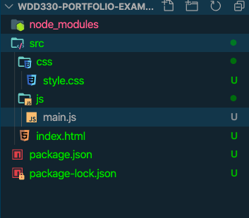

Development workflow has become quite complicated for Web development.
Lets take a medium sized project for example. It could have dozens of
javascript files, several css files, 3rd party libraries, and who
knows how many icons, fonts, images, etc are involved. It might be
using a CSS preprocessor like SASS or it could be transpiling the
Javascript to make sure that new features will work in older browsers.
A potential list of tasks that could need to happen everytime
something changes is this:
Lint CSS and Javascript to find any coding issues.
Run unit tests to make sure nothing got broken with your last
changes
compile all SCSS/LESS to CSS
concatinate all CSS into one file for faster loading,
Minify the CSS to reduce file size.
Transpile Javascript with Babel for wider support for older
browsers
Concatinate all JS files into one file for faster loading
Minify and Uglify Javascript to reduce size
Do the same for any 3rd party CSS or JS
Move all the production assets into a distribution directory to
separate them from the development stuff
Whew! That's a big list...and they have to happen A LOT!
It's no wonder that developers have produced tools to help manage all
of this. This activity will introduce a simple implementation of some
of these tools. The tools fall into three catagories:
Package managers: These keep track of all of the external
dependencies for our app. Both development tools and libraries we
might be using. It knows not only which packages to download...but
tracks versions as well. We are using npm for our
package manager.
Bundlers: bundlers handle the compiling, transpiling, concatinating,
minifying, and moving around of assets in our project. We are using
Parcel as our bundler. Another common bundler is
Webpack
Task managers: these keep track of what needs to be done and when.
There will generally be scripts defined in the task manager for each
phase of development. Our project is fairly simple so we are just
using npm again for task manager. Other common managers
are Grunt or Gulp
Prerequisites
It will really help if you are familiar with the command line for
your Operating system. Here is a quick overview to the
command line for Mac
and the
command line for Windows
if you need a primer.
You must have
NodeJS
installed on your computer. Most of these tools require it. Goto
this software setup
walkthrough and skip to the Node part for instructions for your OS.
Activity
Create a new directory on your computer to hold your portfolio.
Name it something like wdd330-port. These instructions
will assume that you are using the VS Code editor. Things will
work much easier if you are. Unless you have an editor that you
know extremely well I would recommend that you use VS Code for
this course.
Open your new directory in your editor. Most editors work much
better if you are working in a project. When you opened the
directory in VS Code instead of a single file you told it to treat
the directory as a project...and to treat all the files in the
directory as related.
The first thing we need to do is initialize our project. You can
do this by typing the following in the command line for you
computer
while in the root of your project directory:
npm init
One nice feature of VS Code is that it has a built in terminal to
access the command line of your operating system. If you type
ctrl ` (That is hold the control key and the
back-tick...the key to the left of the 1 key on common English
keyboards.) That should open up the terminal window already set to
the project directory.
After answering a bunch of questions (you can accept the defaults
for all of them) you should notice that a new file has been
created...package.json. This file contains the
information about your project that the tools we will be using
need to function properly.
Three types of tools were mentioned above. Step one had us
initialize our package manager: npm. Now we need to setup the
bundler we will be using: Parcel.
To add the parcel tool into our project we will use the package
manager. Type the following into the terminal:
npm install parcel-bundler --save-dev
This will create a new directory in our project
node_modules. All of the packages we install with npm
will be placed there.
In order to get Parcel to work we will need to provide it with an
entry point into our project. Let's create that now. Make a new
directory in your project called src, this is where we
will place all of the code we write. Create a file called
index.html inside that directory. Add some simple HTML
as a start for your portfolio. (Another cool feature of VS Code is
it includes a handly tool called
Emmet. It provides
shortcuts for generating HTML code. In your empty
index.html file type ! then press the tab
key. You should get a nice simple boilerplate for a new HTML
document.)
Add two more directories in src: css, and
js. Inside of the css directory create a
file called style.css. Place a simple css rule in there
like body { background-color: salmon; } In the
js directory create a file called
main.js and type a simple
console.log('It worked!') in it. At this point your
directory structure for the project should look like this:

Directory Structure
Finally let's let parcel know where to find the CSS and JS for our
project. Add the following lines to the head of your index file:
We are ready to test our setup. This will be easier if we use some
sort of task manager. We will use NPM for this as well. Open your
package.json file back up. Find the section "scripts".
There should be one line in there right now, a test command. Add a
few lines to that section so it looks like this:
Open the folder with the boilerplate code in your editor. You will
notice a few things.
node_modules : This is where all of the 3rd party
tools we will need got installed to when you ran 'npm install'
above.
src: This is where I have placed all of the code.
This is where you will work.
package.json: This file contains the information
about the dependencies for the project. When you ran the install
command this is how it knew what to go get. We can also define a
few scripts in here.
Various other configuration files.
Open the package.json file in your editor. Look first at
the scripts portion. You should see the following
possible commands:
prestart: This gets run automatically when you run
start or you can run it by itself as well. It does
a bit of cleanup for us.
start: This command starts up our bundler Parcel.
This starts a webserver on port 1234, clears out the 'build'
directory, builds the new files based on what is in 'src'
(transpiles with babel, compiles our Sass if we are using it,
and concatenates all of our CSS and JS into separate files.),
watches our files for changes, re-compiles everything on a
change and refreshes the browser. It places the code in a
build directory. Quite a lot for one simple command!
prebuild: just like prestart this runs
automatically when we run the build process.
build: This command gets our code ready for
distribution. It runs a similar process to the
start above, but also minifies the CSS and JS. It
creates a dist directory. If you were publishing your
app to a server that is the code you would move.
watch is very similar to start
lint runs a linter on your Javascript and will make
recommendations and sometimes even changes to your code based on
the rules it is configured with.
You can run any of those scripts by navigating to the project
directory and typing npm run command. So to start parcel running and launch it's built in web server
you would type npm run start
Look next at the devDependencies section. This lists out
all of the tools we are using to facilitate our development. These
tools will not be a part of the distribution code. This is a good
thing, I don't know if you noticed...but the
node_modules directory is over 100MB!
To start up your tools go ahead and run
npm run start in the command line. You should see the
build directory get created and populated with files. And
if you point your web browser to
http://localhost:1234 you will see a simple page. Make
a change to any of the files in the project and the browser will
auto-refresh.
When you are done working you can hit ctrl-c in your
command line to end that process.